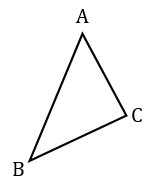
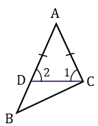
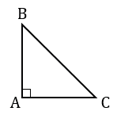
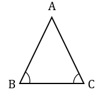

Теорема:
В треугольнике: 1) против большей стороны лежит больший угол; 2) обратно, против большего угла лежит большая сторона.
1) Дано: △АВС, АВ>АС.
Доказать: ∠С>∠В.
Доказательство:

Отложим на стороне АВ отрезок АD, равный стороне АС.

АD<АВ, т.к. по построению АD = АС, а по условию АС<АВ, значит, точка D лежит между точками А и В. Следовательно, ∠1 является частью ∠С, т.е. ∠С>∠1. Угол 2 внешний угол △DBC, поэтому ∠2>∠В. △АDС - равнобедренный с основанием DC, т.к. по построению АD = АС, следовательно, ∠1 =∠2 (углы при основании).
Итак, ∠С>∠1, ∠1 =∠2, значит, ∠С >∠2, при этом ∠2>∠В, следовательно, ∠С>∠В.
2) Дано:△АВС, ∠С >∠В.
Доказать: АВ>АС.
Доказательство:
Предположим, что это не так. Тогда возможны два варианта:
Значит, наше предположение неверно, следовательно, АВ>АС. Что и требовалось доказать.
Дано: △АВС, ВС - гипотенуза, ∠А - прямой.
Доказать: ВС > АС, ВС > АВ.
Доказательство:

△АВС - прямоугольный, ∠А - прямой, следовательно, углы В и С острые, тогда ∠А>∠В и ∠А > ∠С, значит, ВС >АС, ВС>АВ (в треугольнике против большего угла лежит большая сторона). Что и требовалось доказать.
Если два угла треугольника равны, то треугольник равнобедренный (признак равнобедренного треугольника).
Дано: △АВС, ∠В =∠С.
Доказать: АС = АВ.
Доказательство:

Предположим, что одна из сторон будет больше, т.е. АС>АВ, тогда и угол лежащий против этой стороны будет больше, т.е. ∠В > ∠С (в треугольнике против большей стороны лежит больший угол), а это противоречит условию: ∠В =∠С, следовательно, наше предположение неверно, значит АС = АВ.
Итак, в △АВС равны две стороны (АС = АВ), следовательно, данный треугольник - равнобедренный. Что и требовалось доказать.